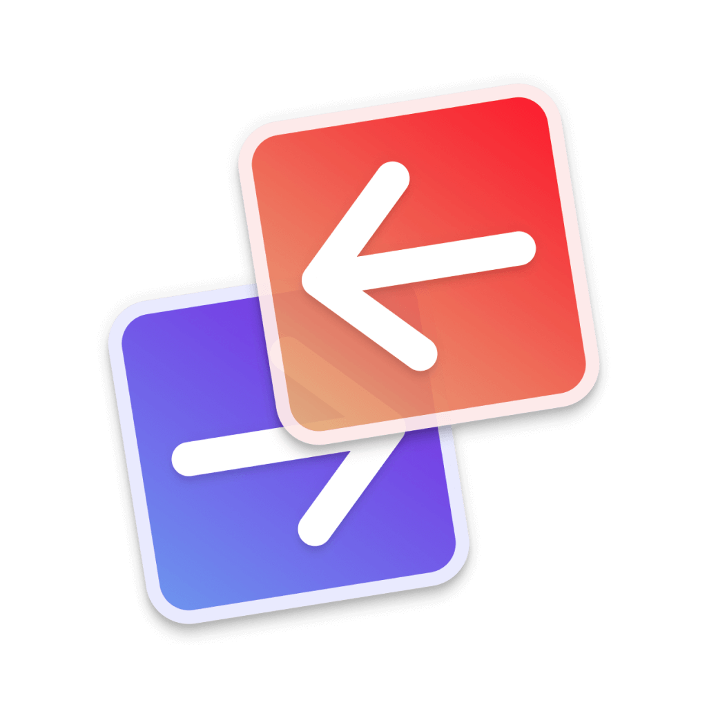

Tab SpaceTab Space is a nifty extension app that helps you save and manage your tabs as separate sessions, as well as providing some handy shortcuts for Safari.
Requires macOS 11 or later

Tab SpaceTab Space is a nifty extension app that helps you save and manage your tabs as separate sessions, as well as providing some handy shortcuts for Safari.
Requires macOS 11 or later
Quickly save all your open tabs as a session with a single click. Return to your work anytime.
Create separate sessions for different projects. Keep your browsing organized and clutter-free.
Power users love our customizable shortcuts. Save, restore, and manage tabs without leaving the keyboard.